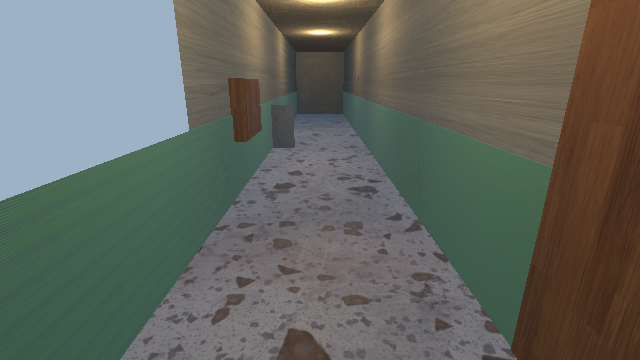
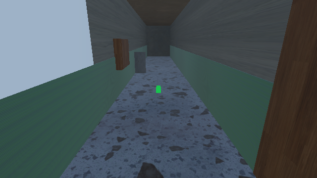
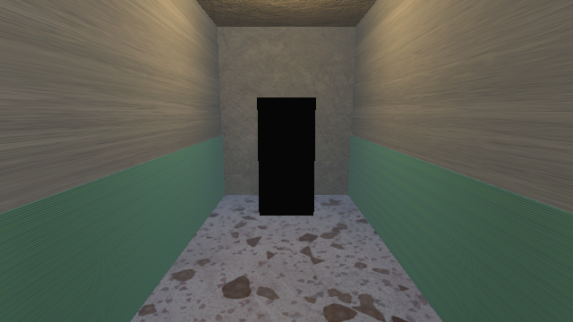

中式梦核找异常。你在深夜的老居民楼里一层层往下走，
觉得哪里不对劲，就回头。
场景取千禧年前后中国城镇的居民楼公共走廊—— 水磨石地面、绿漆墙裙、声控灯、信报箱、防盗门、开锁疏通的小广告。
这些空间在 2000 年前后是"明天"。今天回头看， 那个明天从来没有来过。挂历上圈着的那天，是 2 月 30 日。
最早的实现是运行时 Random.value < 0.55 掷骰子 + 随机亮黑影。 跑起来才发现：玩家从没见过"正常"，所以"找异常"这个玩法根本不成立。 那是结构缺陷，不是美术缺口——于是把抽取顺序写死：干净判定先于抽样，第 1 层强制干净。



| 编号 | 异常 |
|---|---|
| anom03 / 04 | 一户防盗门半开 · 开锁疏通小广告整排消失 |
| anom05 / 06 | 地上多出一双小孩旧布鞋 · 靠墙的旧自行车倒了 |
| anom07 / 08 | 信报箱小门全部敞开 · 门缝下渗出一滩水 |
| anom09 / 10 | 天花板垂下一段红电线 · 窗外该有楼的地方全黑 |
所以它可以被删掉重建——也因此能被机器判定建对没有。8 小时预算下，能重建的东西才敢改。
对导出产物严格 grep 集合名 = 0 命中。 Blender 5.2.2 的 43 个 export_scene.fbx 参数里没有"集合导出为节点"开关。 想跨进程传分组信息，只剩物体名这一条通道。
层级路径确实保住了，但它连带把子节点 localPosition 一起除/乘， 把 100× 搬到父级上——几何位置就错了。被否。
同一条通道把节点 baked 成 lossyScale = 100 + 顶点预除 100。 所以 localScale、Mesh.bounds、 BoxCollider.size 都不是米， 只有 Renderer.bounds / Collider.bounds 是。
Blender +Z 落到 Unity +Y，装配统一套 FbxYaw = 90°。立方体的 AABB 对旋转不变，会掩盖这条事实—— 非对称网格必须用 bounds 复核。
命名约定只有 AnomalyResolver.cs 一个文件知道。 发送侧（4 个 Python 脚本 + 导出前自检）与消费侧（Bootstrap / Verify / Capture） 一律调 IsAnomalyWireName()，不各自复制正则。 改契约是一次改动，不是六处。
走廊实测口径：宽 2.50m × 高 3.10m × 长 24.05m。 旧读数 2.91 作废——那是露在墙外的窗板撑出来的假宽度。
| 段 | 验什么 |
|---|---|
| 建模段 VerifyFbx | 只验 Corridor.fbx：几何、真开洞、杂物通行带、命名逐字保真 |
| 装配段 VerifyAssembly | 读 Main3D.unity：装配完整性，含标题页与引导条五道门 |
| 玩法段 VerifyGameplay | 不引用任何资产，M1 灰盒期即成立 |
判据计数一律从名单 .Length 派生，禁魔数—— 加一个物件只需改名单，门自动跟上。
VERIFY_BAD=1 把期望值翻成物理不可能的数 （尺寸容差 0.9–1.1 → 90–110、哨兵计数 99、HUD 期望翻成 Overlay）， 一次跑让每条分支各成一红、互不短路。
· 帧哈希对"腿会不会摆"没有判据力——FilmGrain 是时域噪声、6 盏灯在闪，任意两帧必然 DIFFER。只能靠肉眼帧 + 数字口径。
· 中心/四角亮度比 1.202 > 1，读数是暗端墙面和内容给的，不是滤镜给的——不能当暗角证据，最终退回肉眼。
· md5 差分抓不到"本体摆对没有"——信报箱门悬空正是它的盲区。
· Mouse Y 是平滑轴，30px 合成移动摊到每帧约 0.1°，读成"低头没反应"——那是量具坏了，不是玩家按不动。改三段各 250px。
· ESC 退出码 0xC0000005 ≠ 退出失败（Mono + d3d12 关栈访问违例，且关栈要 9s）。
· mesh 节点 transform.position 恒 (0,0,0)，必须取 bounds.center。
开赛定的选型是 2D 全屏图 + 点击找不同（ImageGen 生图）。 跑到玩法核心时发现结构缺陷：玩家从没见过"正常"。 于是把交付轨道整个换成真 3D 第一人称， 2D 保底废弃并从仓库删除。
换的核心理由：Blender 相对生图的碾压点是 同景由摄像机几何保证——不必祈祷模型配合。
M0 探针专门验"Blender 集合能不能带着进 FBX"。 结论是零命中，直接决定了整套 wire 契约的形态。 如果不做这个探针，会按集合分组写完整个管线再全部返工。
| 项 | 处置 |
|---|---|
| 2D 保底轨道 | 废弃并删除，构建切 3D 单轨 |
| 好结局挂历彩蛋 | 砍（无资产、预算不足） |
| "零第三方资产"声明 | 两次改判，红线收紧为仅 CC0，CC-BY 不接受 |
| Empty 包裹传分组 | 实测否掉，会把 100× 搬到父级 |
| "M3 超时砍到 6 条异常" | 降级预案未启用，10 组全保 |
| 脚本后端 | 声明口径由 IL2CPP 改判为 Mono（产物实证） |
M1 结束必须已有一个可提交物（灰盒 + 数据层异常）。 美术做不完不影响玩法完整性——这条让后面所有的美术追加都是"加分项"而不是"生死项"。
| 类别 | 来源 | 许可 | 数量 |
|---|---|---|---|
| 走廊壳体 / 门窗 / 灯具 / 10 组异常 / 玩家身体 | Blender Python 脚本自建 | 自有 | 1,008 行 |
| 道具网格 | Poly Haven | CC0 1.0 Universal | 13 件资产 → 15 个摆放实例 |
| 墙面地面 PBR 贴图 | ambientCG | CC0 | 7 套 1K |
| 道具随件贴图 | Poly Haven | CC0 | 13 套 |
| 音频 | ffmpeg 程序合成 | 自有 | 4 条 |
| 键 | 作用 |
|---|---|
| Enter / Space / 点「开 始」 | 从标题页开局 |
| W A S D · 鼠标 | 慢走与转向（梦核感：游荡而不是奔跑） |
| 走到走廊两端的门 | 结算一层：尽头=前进，起点=回头 |
| Esc | 退出 |
必须先完整解压再双击 exe——一个 Windows 构建包 ≠ exe + _Data， 还要同目录的 UnityPlayer.dll 与 MonoBleedingEdge/。
你出来了。
楼道的声控灯一盏盏亮起来，全是真的。
你还在这儿。
挂历上圈着的那天，从来没有过。
《昨日的明天》· 8 小时单人作品 · 谢谢